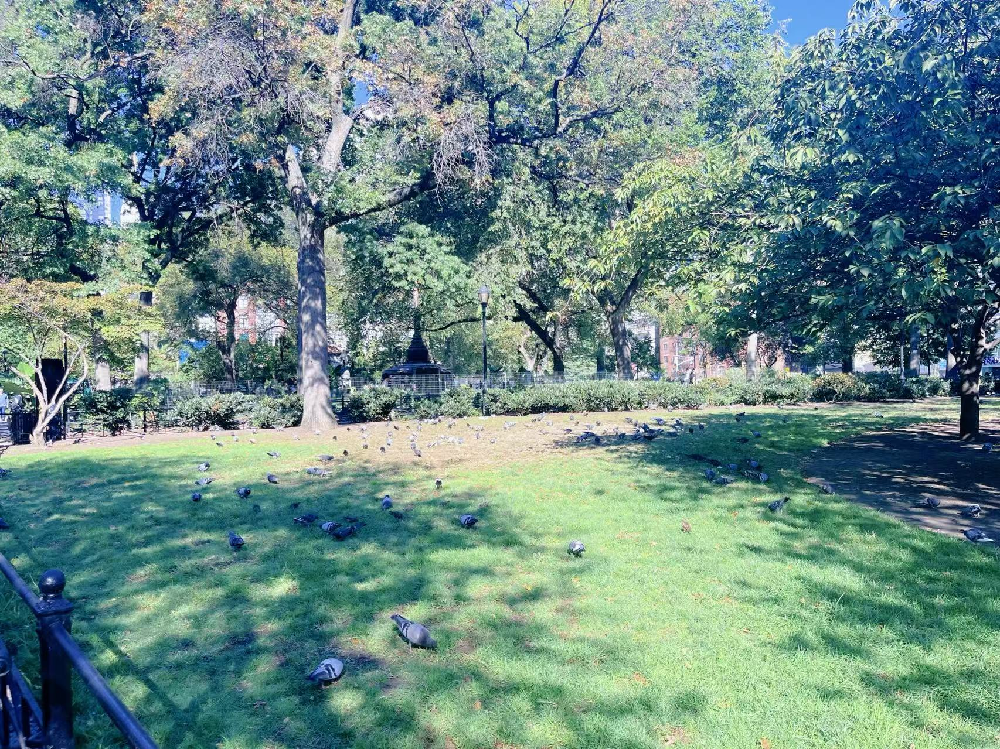

In the heart of the park, near the Independence Flagstaff, the city finally seemed to pause. People gathered in the green seating area, resting and chatting as if time had slowed. Around the Abraham Lincoln statue, friends shared quiet conversations, a few visitors tossed crumbs to eager pigeons, and someone strummed a gentle tune on a guitar. The air felt softer here — a small pocket of calm amid the city’s constant motion. Both people and pigeons seemed to bask in this rare blue tranquility, a reminder that even in the busiest places, peace can still take root.
Each morning, the bistro tables and chairs appear across Union Square, neatly arranged by the Union Square Partnership — quiet invitations for the day to begin. By noon, they’re alive with stories. Friends share lunches under the trees, strangers sit side by side with coffees in hand, and someone always seems to be lost in a book, letting the city hum fade into the background. These simple chairs become more than just seating — they’re pauses in motion, small islands of calm where New Yorkers stop, breathe, and remember what it feels like to just be.